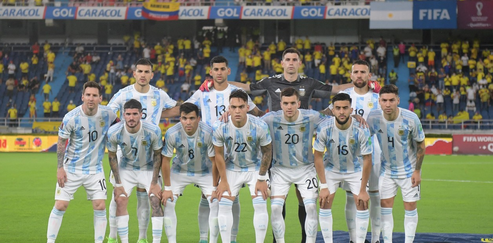
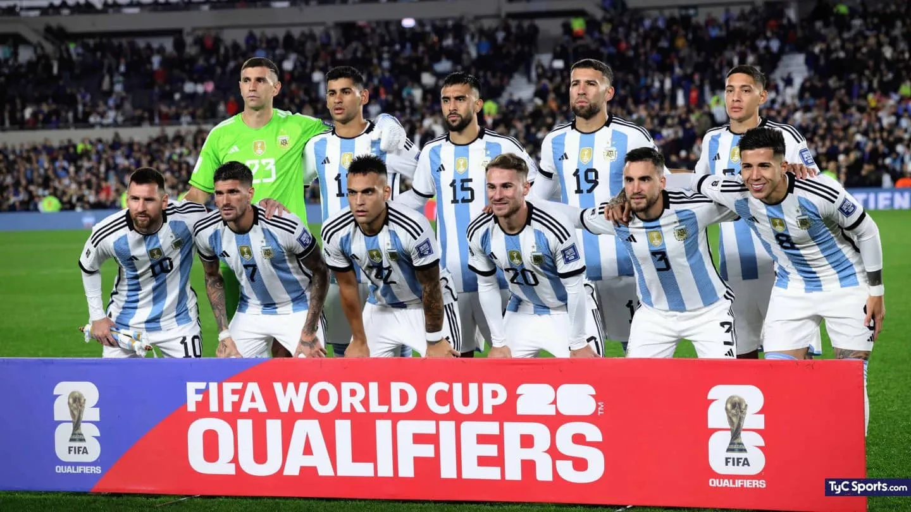
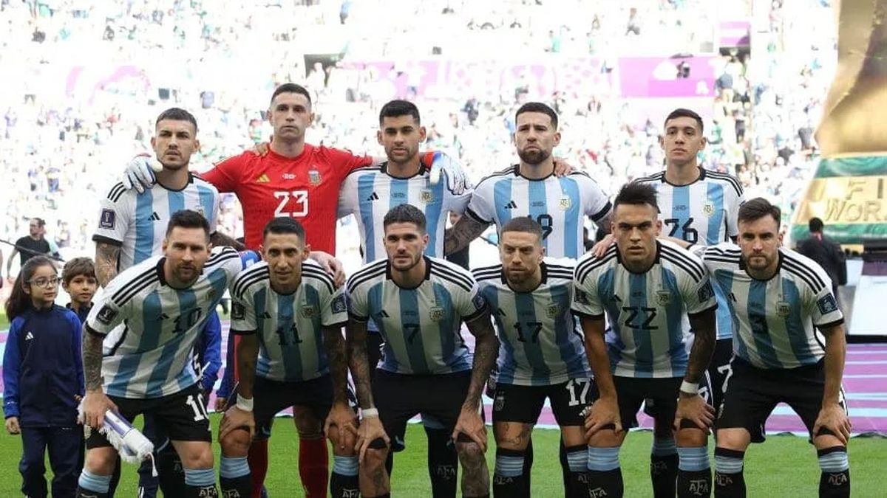

"Elijo Creer"
"Que la gente confie, este grupo no los va a dejar tirados"
Follow every step, every goal! Discover everything about the Argentine national team in our dedicated blog to the Scaloneta. An exciting journey, full of stories and passion for football. Let's go together for the glory!
2018
In the year 2018, the Argentine national team embarked on a profound journey, a chapter marked by a compelling transformation under the stewardship of Lionel Scaloni. Beyond mere statistics and match outcomes, this period was imbued with deeply rooted values that encapsulate the essence of Argentine football. Under Scaloni's guidance, the team's renewal was more than a tactical shift; it was a celebration of profound values. Unity, perseverance, and passion were interwoven into every pass, every goal, and every shared embrace on the pitch. It served as a poignant reminder that football is more than a game; it is an emotional bond that unites an entire nation. In this odyssey, Lionel Messi emerged as a leader transcending statistics. His brilliance wasn't confined to goals; it radiated through humility and camaraderie instilled within the team. Messi embodied Argentine values: determination, loyalty, and unwavering commitment. Scaloni's arrival not only tactically transformed the team but also revitalized the spirit of Argentine football. Unshakable faith in overcoming adversity and constant belief in greatness became the bedrock upon which this new era was built. Beyond the playing fields, 2018 became an epic poem of resilience and love for the jersey. Argentine values shone brightly in every match, inspiring a nation to embrace hope and determination. In retrospect, 2018 stands as a testament to the transformative power of football. In each match, in every shed tear, and in every shared hug, the Argentine national team demonstrated that, at the heart of the game, beats a deeper connection: the union of values, an unbreakable bond that transcends victory and defeat. This year becomes a lyrical poem celebrating the greatness of football and the indomitable spirit of "Elijo Creer" .
2019

In the year 2019, the Argentine national team continued its captivating journey, a saga marked by evolution and resilience under the continued guidance of Lionel Scaloni. This period, much like the preceding year, bore witness to a deeper narrative defined by core values that resonate profoundly with the soul of Argentine football. Scaloni's leadership fostered a sense of unity and commitment that extended beyond mere strategy. Each match became a canvas on which the team painted the virtues of perseverance, camaraderie, and an unyielding passion for the sport. The spirit of football in Argentina echoed through every dribble, every save, and every goal celebration. Lionel Messi, as the emblematic figurehead, continued to exemplify the values ingrained in the Argentine football ethos. His prowess on the field transcended mere statistics, embodying determination, loyalty, and an enduring love for representing his nation. The strategic evolution under Scaloni in 2019 built upon the foundations laid the previous year. The team's style of play reflected a continuous commitment to overcoming challenges and a steadfast belief in their collective potential. Beyond the pitch, the year 2019 became another chapter in the epic tale of resilience and devotion to the jersey. Argentine values were not just demonstrated during victories but also in the face of adversity, reinforcing the profound connection between the team and its passionate supporters. Looking back, 2019 stands as a poignant continuation of the transformative power of football. It symbolizes the ongoing saga of a national team that embraces challenges, celebrates victories, and embodies the enduring spirit of "Elijo Creer" a testament to the belief that transcends the beautiful game.
2020
In the unprecedented year of 2020, the Argentine national football team, led by the unwavering Lionel Scaloni, navigated uncharted waters both on and off the field. The global pandemic disrupted the rhythm of international competitions, prompting a pause in the traditional football calendar. However, this challenging period became a canvas on which the team painted a narrative of resilience, adaptability, and the enduring connection between the players and their passionate fanbase. While the world grappled with uncertainties, Scaloni's leadership proved instrumental in steering the team through uncharted territories. The enforced break became a strategic interlude, offering an opportunity for reflection, tactical refinement, and the integration of emerging talents into the squad. Throughout this period, the core values of unity and commitment continued to be the guiding principles, transcending the physical constraints of the playing field. Despite the absence of traditional competitions, individual players, notably Lionel Messi, showcased their unwavering dedication. Messi's performances, both with Barcelona and in the sporadic friendly matches with the national team, served as a beacon of inspiration, underlining his enduring influence and commitment to the Argentine cause. Off the pitch, the year 2020 served as a poignant reminder of the unique bond between the team and its supporters. With live matches temporarily on hold, the virtual connection between the players and fans strengthened, emphasizing the resilience and solidarity of the global Argentine football community. Beyond statistics and match outcomes, 2020 symbolizes a chapter where the spirit of "Elijo Creer" faced adversity head-on, embodying the values of solidarity, determination, and a shared belief that transcends the sport. As the world adapted to new norms, the Argentine national team stood united, poised to face future challenges with a renewed sense of purpose and a commitment to the enduring legacy that binds the team to its fans and the nation.
2021

In the dynamic landscape of 2021, the Argentine national football team continued its journey, navigating a complex and challenging environment. Under the astute leadership of Lionel Scaloni, the team embraced a year that saw a return to international competitions, a pursuit of glory, and a celebration of the enduring spirit that defines Argentine football. Amid the resumption of competitive football, Scaloni's strategic acumen guided the team through various tournaments, including the Copa America. The commitment to a dynamic playing style, blending youth and experience, showcased the team's evolution under his tutelage. The core values of unity, resilience, and a relentless pursuit of excellence became the cornerstones of the team's identity. The individual brilliance of players like Lionel Messi shone brightly on the international stage. Messi's performances, marked by moments of sheer genius and leadership, exemplified the unwavering dedication to the Argentine cause. His quest for international success, combined with a commitment to mentor the younger generation, reflected a profound connection to the team and its aspirations. Off the pitch, the bond between the team and its fervent supporters reached new heights. The resumption of live matches brought an electric energy, echoing through stadiums and virtual platforms alike. The global Argentine football community, united in passion and pride, celebrated victories and weathered challenges as one. As the year unfolded, 2021 became a chapter of resilience, renewed hope, and the pursuit of glory. The team faced adversities with determination, demonstrating that the spirit of "Elijo Creer" remains an indomitable force. Beyond the statistics and outcomes, 2021 represents a testament to the enduring legacy of Argentine football—a legacy woven with the threads of passion, commitment, and the unbreakable bond between the players, the fans, and the nation they represent.
2022
In the epic year of 2022, the Argentine national football team embarked on a thrilling and challenging journey, culminating in a historic triumph as world champions in the World Cup. Under the masterful guidance of Lionel Scaloni, the team embraced an odyssey that unleashed unforgettable emotions, creating moments that will resonate eternally. Group Stage: The tournament kicked off with a bewildering defeat against Saudi Arabia, but the team rebounded with transcendental victories over Poland and Mexico. This tumultuous start underscored the team's resilience, revealing their ability to overcome adversities. Quarterfinals: Argentina continued its triumphant path by crushing Croatia with an applaudable 3-0, solidifying its position among the standout teams of the tournament. Semifinals: The semifinal against France emerged as an epic chapter, culminating in a thrilling 3-3 draw. The penalty shootout kept everyone on the edge of their seats, with "Dibu" Martínez protagonizing a heroic act by saving a crucial penalty, propelling the team to the long-awaited final. Final: The grand final against France became an epic battle that concluded in an exciting 3-3 draw. In the tense penalty shootout, Argentina emerged victorious with a scoreline of 4-2, sealing the triumph with another outstanding performance from "Dibu" Martínez, who saved a crucial penalty and contributed to the crowning moment. This journey to glory not only represented a sporting victory but also the materialization of courage, unity, and passion that characterize the Argentine national team. Every moment, from the initial setbacks to the final euphoria, stands as an eternal legacy in the rich history of Argentine football. The albiceleste crafted a fairy tale, and the world applauds their conquest!